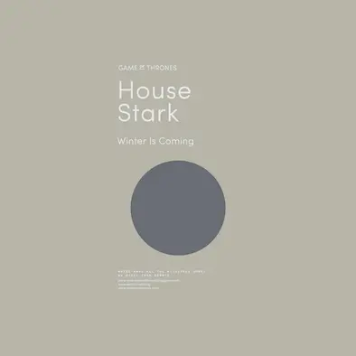

Maison Stark
La maison Stark est la maison suzeraine du Nord et son siège se situe à Winterfell. Leur blason est un « loup-garou » gris sur champ blanc.
« L'hiver vient »La maison Stark est la maison suzeraine du Nord et son siège se situe à Winterfell. Leur blason est un « loup-garou » gris sur champ blanc.
« L'hiver vient »La maison Baratheon dirige les Terres de l'Orage au sud-ouest de Westeros depuis sa forteresse d'Accalmie. Son emblème est un cerf noir couronné.
« Notre est la fureur »La maison Arryn domine la région du Val d'Arryn depuis la forteresse imprenable des Eyrié. Son emblème est un faucon bleu.
« Aussi haute qu'Honneur »La maison Lannister domine les régions de l'Ouest depuis sa demeure de Castral Roc. L'emblème des Lannister est le lion d'or.
« Je rugis ! »La maison Greyjoy règne sur les Îles de Fer, au large de la côte ouest du royaume des Sept Couronnes. Son emblème est un kraken doré.
« Nous ne semons pas »La maison Tyrell dirige la région du Bief au sud ouest des Sept Couronnes. Son emblème est la rose dorée sur un champ vert.
« Plus haut, plus fort »